2008년부터 3년마다 조사되는 특수교육 데이터를 수집 및 가공하여, 교육 현장과 국민의 실질적인 데이터 활용을 지원합니다.
추천 검색어
73.7%
전체 양적 성장
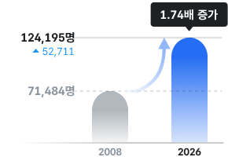
680.6%
조기개입 확대
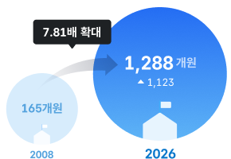
99.8%
인프라 확충
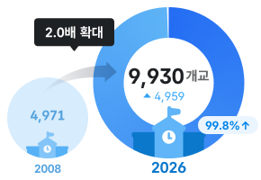
74.1%
통합교육 성과
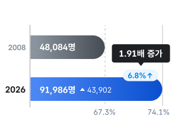
출처: 교육부 국립특수교육원, 특수교육통계(2008~2026년)
변화하는 교육 현장을 담아온 특수교육 실태조사의 기록
2008
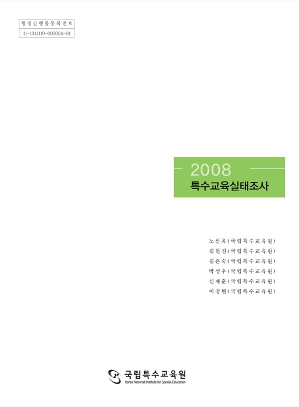
2011
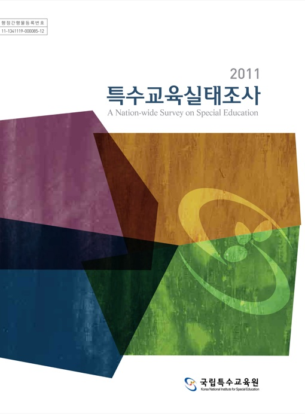
2014
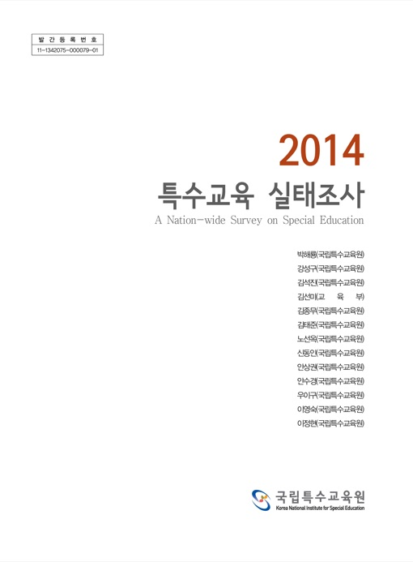
2017
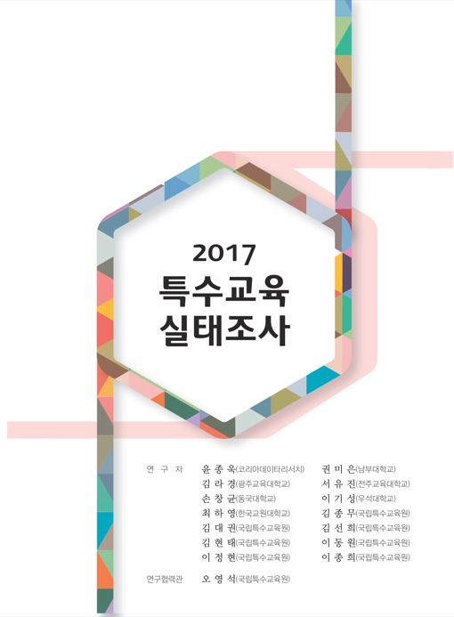
2020
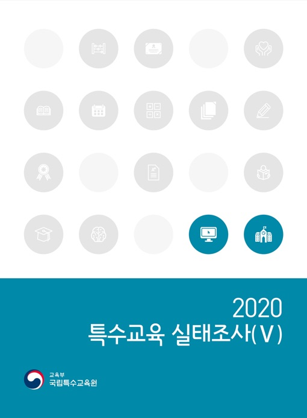
2023
2026
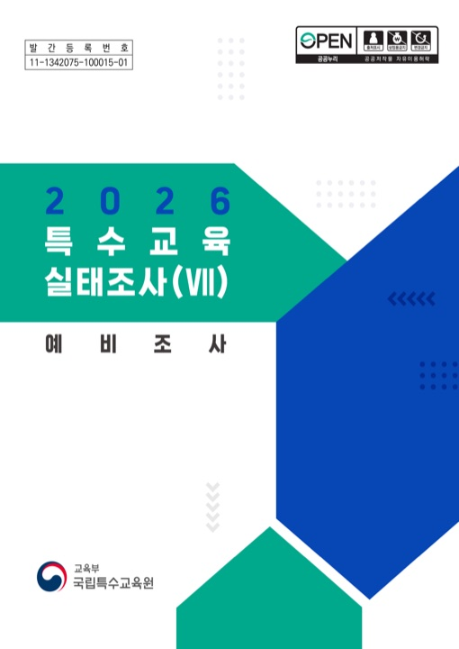
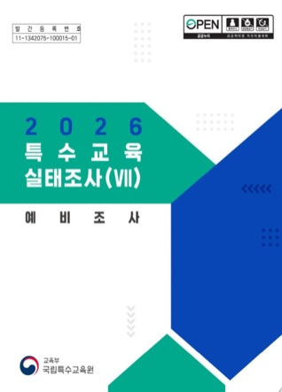
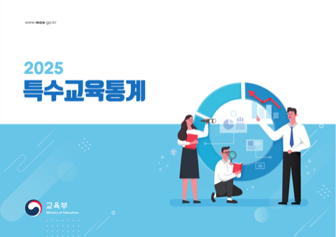
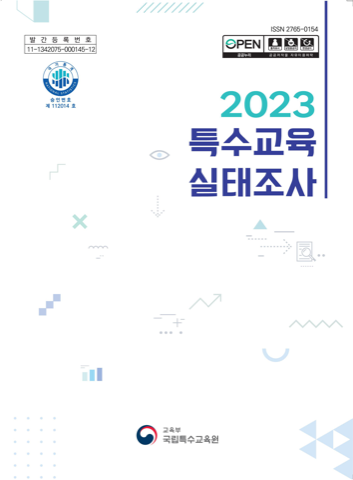
현재 배너01 / 전체08
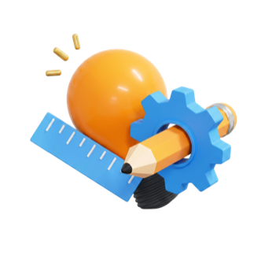
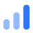